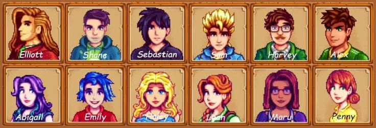
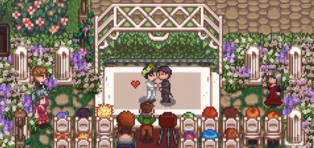

💖 Casamento e Relacionamentos
Em Stardew Valley , o jogador pode criar amizades conversando diariamente com os moradores da Vila Pelicanos e presenteando-os com itens de que gostam. Cada personagem possui gostos e preferências diferentes, tornando cada relacionamento único.
Ao aumentar o nível de amizade, é possível desbloquear eventos especiais que revelam mais sobre a história e a personalidade de cada morador. Entre os habitantes da vila, 12 personagens podem se tornar parceiros românticos. Para iniciar um namoro, é necessário entregar um Buquê ao personagem escolhido. Mais tarde, quando a casa estiver melhorada e todos os requisitos forem cumpridos, o jogador poderá fazer um pedido de casamento usando o Pingente da Sereia.
Após o casamento, o casal passa a morar junto na fazenda. O cônjuge pode ajudar nas tarefas do dia a dia, como regar plantações, alimentar animais, consertar cercas e preparar refeições. Também é possível ter filhos ou adotar crianças, tornando a vida na fazenda ainda mais completa e acolhedora.
